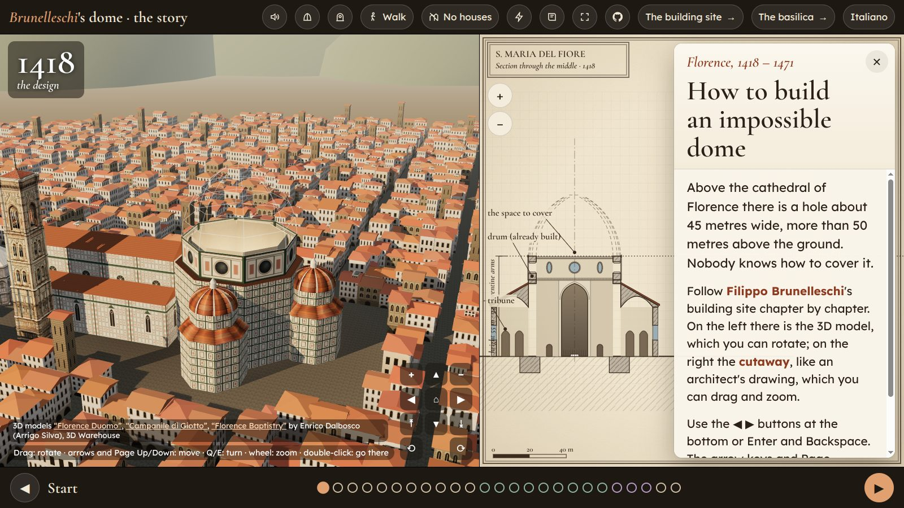

The building site
The dome rises year by year, from 1418 to 1471: the competition, the machines, the herringbone brickwork, the chains. Then stories from the site, the frescoes and a final quiz.
OpenTwo interactive tours of Santa Maria del Fiore, made for middle-school students: rotate the model, cut it open to look inside, walk down the nave. Every chapter has a narrator.

The dome rises year by year, from 1418 to 1471: the competition, the machines, the herringbone brickwork, the chains. Then stories from the site, the frescoes and a final quiz.
Open
Eleven chapters: the facade, the Gates of Paradise, the Bell Tower, the Baptistery and an interior you can walk through.
OpenNeeds a browser with WebGL. Each page is a single file that also works offline (about 25 MB each). Open-source educational project: code and credits on GitHub. 3D models by Enrico Dalbosco (3D Warehouse); photos from Wikimedia Commons.